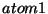
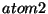
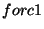
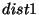
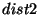
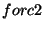
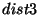
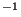
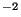

The prepare module is used to set up the necessary files for a molecular dynamics simulation with NWChem. User supplied coordinates can be used to generate topology and restart files. The topology file contains all static information about a molecular system, such as lists of atoms, bonded interactions and force field parameters. The restart file contains all dynamic information about a molecular system, such as coordinates, velocities and properties.
Without any input, the prepare module checks the existence of a topology and restart file for the molecular systems. If these files exist, the module returns to the main task level without action. The module will generate these files when they do not exist. Without any input to the module, the generated system will be for a non-solvated isolated solute system.
To update existing files, including solvation, the module requires input directives read from an input deck,
prepare ... end
The prepare module performs three sub-tasks:
Files involved in the preparation phase exist in the following hierarchy:
Data is taken from the database files searched in the above order. If data is specified more than once, the last found values are used. For example, if some standard segment is redefined in a temporary file, the latter one will be used. This allows the user to redefine standards or extensions without having to modify those database files, which may reside in a generally available, non-modifyable directory. If a filename is specified rather than a directory, the filename indicates the parameter file definition. All other files (frg and sgm files) will be take from the specified directory.
The most common problems with the prepare module are
The file $HOME/.nwchemrc may contain the following entries that determine which files are used by the prepare module.
ffield <string ffname>
This entry specifies the default force field. Database files supplied with
NWChem currently support values for ffname of amber, referring
to AMBER95, and charmm, referring to the academic CHARMM22 force field.
<string ffname>_(s | x | q | u | t | c) <string ffdir>[<string parfile>]
Entries of this type specify the directory ffdir in which force field
database files can be found. Optionally the parameterfile in this directory
may be specified as parfile.
The prepare module will only use files in directories
specified here. One exception is that files in the current work directory
will be used if no directory with current files is specified.
<string solvnam> <string solvfil>
This entry may be used to identify a pure solvent restart file solvfil
by a name solvnam
An example file $HOME/.nwchemrc is:
ffield amber amber_s /msrc/proj/nwchem/share/amber/amber_s/amber99.par amber_x /msrc/proj/nwchem/share/amber/amber_x/ amber_u /usr/people/username/data/amber/amber_u/ spce /msrc/proj/nwchem/share/solvents/spce.rst charmm_s /msrc/proj/nwchem/share/charmm/charmm_s/ charmm_x /msrc/proj/nwchem/share/charmm/charmm_x/
system <string sys_calc>
The system name can be explicitly specified for the prepare module. If not specified, the system name will be taken from a specification in a previous md input block, or derived from the run time database name.
source ( pdb | rtdb )
The source of the coordinates can be explicitly specified to be from
a PDB formatted file sys.pdb, or from a geometry object in the run
time database. If not specified, a pdb file will be used when it exists
in the current directory or the rtdb geometry otherwise.
model <integer modpdb default 0>
If a PDB formatted source file contains different MODELs, the model
keyword can be used to specify which MODEL will be used to generate the
topology and restart file. If not specified, the first MODEL found on the
PDB file will be read.
altloc <character locpdb default ' '>
The altloc keyword may be used to specify the use of alternate
location coordinates on a PDB file.
chain <character chnpdb default ' '>
The chain keyword may be used to specify the chain identifier
for coordinates on a PDB file.
histidine ( hid | hie | hip )specifies the default protonation state of histidine.
sscyx
Keyword sscyx may be used to rename cysteine residues that form
sulphur bridges to CYX.
hbuild
Keyword hbuild may be used to add hydrogen atoms to the
unknown segments of the structure found on the pdb file.
If no existing sequence file is present in the current directory,
or if the new_seq keyword was specified in the prepare
input deck, a new sequence file is generated from information
from the pdb file, and the following input directives.
maxscf <integer maxscf default 20>
Variable maxscf specifies the maximum number of atoms in a segment for which partial atomic charges will be determined from an SCF calculation followed by RESP charge fitting. For larger segments a crude partial charge guestimation will be done.
qscale <real qscale default 1.0>
Variable qscale specifies the factor with which SCF/RESP determined charges will be multiplied.
modify sequence { <integer sgmnum>:<string sgmnam> }
This command specifies that segment sgmnam should be used
for segment with number sgmnum. This command can be used
to specify a particular protonation state. For example, the
following command specifies that residue 114 is a hystidine
protonated at the N site and residue 202 is a hystidine
protonated at the N site:
site and residue 202 is a hystidine
protonated at the N site:
modify sequence 114:HIE 202:HID
Links between atoms can be enforced with
link <string atomname> <string atomname>
For example, to link atom SG in segment 20 with atom FE in segment 55, use:
link 20:_SG 55:FE
The format of the sequence file is given in Table 34.8.
In addition to the list of segments this file also includes links
between non-standard segments or other non-standard links.
These links are generated based on distances found between
atoms on the pdb file. When atoms are involved in such non-standard
links that have not been identified in the fragment of segment
files as a non-chain link atom, the prepare module will ignore
these links and report them as skipped. If one or more of these links
are required, the user has to include them with explicit link
directives in the sequence file, making them forced links.
Alternatively, these links can be made forced-links by changing
link into LINK in the sequence file.
fraction { <integer imol> }
Directive fraction can be used to separate solute molecules
into fractions for which energies will be separately reported
during molecular dynamics simulations. The listed molecules will be
the last molecule in a fraction. Up to 10 molecules may be
specified in this directive.
counter <integer num> <string ion>
Directive counter adds num counter ions of type
ion to the sequence file. Up to 10 counter
directives may appear in the input block.
counter <real factor>
This directive scales the counter ion charge by the specified factor in the determination of counter ions positions.
new_top [ new_seq ]
Keyword new_top is used to force the generation of a new topology
file. An existing topology file for the system in the current directory
will be overwritten. If keyword new_seq is also specified, an
existing sequence file will also be overwritten with a newly generated
file.
amber | charmm
The prepare module generates force field specific fragment, segment and topology files. The force field may be explicitly specified in the prepare input block by specifying its name. Currently AMBER and CHARMM are the supported force fields. A default force field may be specified in the file $HOME/.nwchemrc.
standard <string dir_s>[<string par_s>] extensions <string dir_x>[<string par_x>] contributed <string dir_q>[<string par_q>] user <string dir_u>[<string par_u>] temporary <string dir_t>[<string par_t>] current <string dir_c>[<string par_c>]
The user can explicitly specify the directories where force field
specific databases can be found. These include force field standards,
extensions, quality assurance tests, user preferences, temporary , and
current database files.
Defaults for the directories where database files reside may be specified
in the file $HOME/.nwchemrc for each of the supported force fields.
Fragment, segment and sequence files generated by the prepare module are
written in the temporary directory. When not specified, the current
directory will be used.
Topology and restart files are always created in the current directory.
The following directives control the modifications of a topology file. These directives are executed in the order in which they appear in the prepare input deck. The topology modifying commands are not stored on the run-time database and are, therefor, not persistent.
modify atom <string atomname> [set <integer mset> | initial | final] \ ( type <string atomtyp> | charge <real atomcharge> | \ polar <real atompolar> | dummy | self | quantum | quantum_high )
These modify commands change the atom type, partial atomic charge,
atomic polarizability, specify a dummy, self-interaction and quantum atom,
respectively. If mset is specified, the modification will only
apply to the specified set, which has to be 1, 2 or 3. If not specified,
the modification will be applied to all three sets. The quantum region in
QM/MM simulations is defined by specifying atoms with the quantum
or quantum_high label. For atoms defined quantum_high
basis sets labeled X_H will be used.
The atomnam
should be specified as <integer isgm>:<string name>, where
isgm is the segment number, and name is the atom name. A
leading blank in an atom name should be substituted with an underscore.
The modify commands may be combined. For example, the following directive
changes for the specified atom the charge and atom type in set 2 and
specifies the atom to be a dummy in set 3.
modify atom 12:_C1 set 2 charge 0.12 type CA set 3 dummy
With the following directives modifications can be made for entire segments.
modify segment <integer isgm> [set <integer mset> | initial | final] \ ( dummy | self | uncharged | quantum | quantum_high )
Modifications to bonded interaction parameters can be made with the following modify commands.
modify ( bond <string atomtyp> <string atomtyp> | \ angle <string atomtyp> <string atomtyp> <string atomtyp> | \ torsion <string atomtyp> <string atomtyp> <string atomtyp> \ <string atomtyp> [ multiplicity <integer multip> ] | \ plane <string atomtyp> <string atomtyp> <string atomtyp> \ <string atomtyp> ) [set <integer mset> | initial | final] \ <real value> <real forcon>
where atomtyp and mset are defined as above, multip
is the torsion ultiplicity for which the modification is to be applied,
value is the reference bond, angle, torsion angle of out-of-plane
angle value respectively, and forcon is the force constant for
bond, angle, torsion angle of out-of-plane angle. When multip
or mset are not defined the modification will be applied to
all multiplicities and sets, respectively, for the identified bonded
interaction.
After modifying atoms to quantum atoms the bonded interactions in which only quantum atoms are involved are removed from the bonded lists using
update lists
Error messages resulting from parameters not being defined for bonded interaction in which only quantum atoms are involved are ignored using
ignore
noe <string atom1> <string atom3> \ <real dist1> <real dist2> <real dist3> <real forc1> <real forc2>
This directive specifies a distance restraint potential between atoms  and , with a harmonic function with force constant  between  and , and a harmonic function with force constant  between and . For distances shorter than or larger than , a constant force is applied such that force and energy are continuous at and , respectively. Distances are given in nm, force constants in kJ mol nm.
select <integer isel> { <string atoms> }
Directive select specifies a group of atoms used in the
definition of potential of mean force potentials.
The selected atoms are specified by the string atoms which
takes the form
[{isgm [ - jsgm ] [,]} [:] [{aname[,]}]
For example, all carbon and oxygen atoms in segments 3 and 6 through 12 are selected for group 1 by
3,6-12:_C????,_O????
pmf [all] [bias] zalign <integer isel> <real forcon1> <real forcon2>
pmf [combine] [bias] xyplane <integer isel> <real forcon1> <real forcon2>
pmf [constraint] [bias] (distance | zdistance) <integer isel> <integer jsel> \
<real dist1> <real dist2> <real forcon1> <real forcon2>
pmf [bias] angle <integer isel> <integer jsel> <integer ksel> \
<real angle1> <real angle2> <real forcon1> <real forcon2>
pmf [bias] torsion <integer isel> <integer jsel> <integer ksel> <integer lsel> \
<real angle1> <real angle2> <real forcon1> <real forcon2>
pmf [bias] basepair <integer isel> <integer jsel> \
<real dist1> <real dist2> <real forcon1> <real forcon2>
pmf [bias] (zaxis | zaxis-cog) <integer isel> <integer jsel> <integer ksel> \
<real dist1> <real dist2> <real forcon1> <real forcon2>
Directive pmf specifies a potential of mean force potential
in terms of the specified atom selection. Option zalign specifies
the atoms in the selection to be restrained to a line parallel to the
z-axis. Option xyplane specifies the atoms in the selection to
be restrained to a plane perpendicular to the z-axis. Options
distance, angle and torsion, are defined in terms
of the center of geometry of the specified atom selections.
Keyword basepair is used to specify a harmonic potential between
residues isel and jsel. Keywords zaxis and zaxis-cog
can be used to pull atoms toward the z-axis.
Option all may be specified to apply an equivalent pmf to each
of the equivalent solute molecules in the system.
Option combine may be specified to apply the specified pmf to
the atoms in all of the equivalent solute molecules.
Option constraint may be specified to a distance pmf to treat
the distance as a contraint.
Option bias may be specified to indicate that this function
should be treated as a biasing potential. Appropriate corrections
to free energy results will be evaluated.
new_rst
Keyword new_rst will cause an existing restart file to be
overwritten with a new file.
The follwing directives control the manipulation of restart files, and are executed in the order in which they appear in the prepare input deck.
solvent name <string*3 slvnam default ``HOH''> \
model <string slvmdl default ``spce''>
The solvent keyword can be used to specify the three letter solvent name as expected on the PDB formatted file, and the name of the solvent model for which solvent coordinates will be used.
solvate [ < real rshell default 1.2 > ] \
( [ cube [ <real edge> ]] | \
[ box [ <real xedge> [ <real xedge> [ <real xedge> ]]]] | \
[ sphere <real radius> ] |
[ troct <real edge> ])
Solvation can be specified to be in a cubic box with specified edge,
rectangular box with specified edges, or in a sphere with specified
radius. Solvation in a cube or rectangular box will automatically also
set periodic boundary conditions. Solvation in a sphere will only allow
simulations without periodic boundary conditions. The size of the cubic
and rectangular boxes will be expanded by a length specified by the
expand variable. If no shape is specified, solvation will be done for
a cubic box with an edge that leaves rshell nm between any solute atom and
a periodic image of any solute atom after the solute has been centered.
An explicit write is not needed to write the restart file.
The solvate will write out a file sys_calc.rst.
If not specified, the dimension of the solvation cell will be as large
as to have at least a distance of rshell nm between any solute atom
and the edge of the cell. The experimental troct directive generates
a truncated octrahedral box.
touch <real touch default 0.23>
The variable touch specifies the minimum distance between a solvent
and solute atom for which a solvent molecule will be accepted for solvation.
envelope <real xpndw default 0.0>sets the expand vealues to be used in
solvate operations.
expand <real xpndw default 0.1>
The variable xpndw specifies the size in nm with which the simulation
volume will be increased after solvation.
read [rst | rst_old | pdb] <string filename> write [rst | [solute [<integer nsolvent>]] ( [large] pdb | xyz)] <string filename>
These directives read and write the file filename in the specified
format. The solute option instructs to write out the coordinates
for solute and all, or if specified the first nsolvent, crystal solvent
molecules only.
If no format is specified, it will be derived from the extension of the
filename. Recognized extensions are rst, rst_old (read only), pdb, xyz
(write only) and pov (write only).
Reading and then writing the same restart file will cause the
sub-block size information to be lost. If this information needs to be
retained a shell copy command needs to be used.
The large keyword allows PDB files to be written with more than 9999
residues. Since the PDB file will not conform to the PDB convention, this
option should only be used if required. NWChem will be able to read the
resulting PDB file, but other codes may not.
scale <real scale default -1.0>
This directive scales the volume and coordinates written to povray files. A negative value of scale (default) scales the coordinates to lie in [-1:1].
cpk [<real cpk default 1.0>]
This directive causes povray files to contain cpk model output. The optional value is used to scale the atomic radii. A neagtive value of cpk resets the rendering to stick.
center | centerx | centery | centerz
These directives center the solute center of geometry at the origin, in the y-z plane, in the x-z plane or in the x-y plane, respectively.
orient
This directive orients the solute principal axes.
translate [atom | segment | molecule] \ <integer itran> <integer itran> <real xtran(3)>
This directive translates solute atoms in the indicated range by xtran, without checking for bad contacts in the resulting structure.
rotate [atom | segment | molecule] \ <integer itran> <integer itran> <real angle> <real xrot(3)>
This directive rotates solute atoms in the indicated range by angle around the vector given by xrot,, without checking for bad contacts in the resulting structure.
remove solvent [inside | outside] [x <real xmin> <real xmax>] \ [y <real ymin> <real ymax>] [z <real zmin> <real zmax>]
This directive removes solvent molecules inside or outside the specified coordinate range.
periodic
This directive enables periodic boundary conditions.
vacuo
This directive disables periodic boundary conditions.
grid <integer mgrid default 24> <real rgrid default 0.2>
This directive specifies the grid size of trial counter-ion positions and minimum distance between an atom in the system and a counter-ion.
cropprints minimum and maximum solute coordinates.
boxsizespecifies to redetermine the box size.
cubespecifies to redetermine the smallest cubic box size.
box <real xsize> <real ysize> <real zsize>
The box directive resets the box size.
align <string atomi> <string atomj> <string atomk>
The align directive orients the system such that
atomi and atomj are on the z-axis, and atomk
in the x=y plane.
repeat [randomx | randomy | randomz] [chains | molecules | fractions ] \ <integer nx> <integer ny> <integer nz> [<real dist>] [<real zdist>]
The repeat directive causes a subsequent write pdb
directive to write out multiple copies of the system, with nx
copies in the x, ny copies in the y, and nz copies in
the z-direction, with a minimum distance of dist between any
pair of atoms from different copies. If nz is -2, an inverted
copy is placed in the z direction, with a separation of zdist nm.
If dist is negative, the box dimensions will be used.
For systems with solvent, this directive should be used with a negative
dist.
Optional keywords chains, molecules and fractions
specify to write each repeating solute unit as a chain, to repeat
each solute molecule, or each solute fraction separately. Optional
keywords randomx, randomy, and randomz can be used
to apply random rotations for each repeat unit around a vector through
the center of geometry of the solute in the x, y or z direction.
skip <integer ix> <integer iy> <integer iz>
The skip directive can be used to skip single repeat unit
from the repeat directive. Up to 100 skip directives
may be specified, and will only apply to the previously specified
repeat directive.
(collapsexy | collapsez) [ <integer nmoves>]specifies to move all solute molecules toward the
z-axis or
x=y-plane, respectively, to within a distance of touch
nm between any pair of atoms from different solute molecules. Parameter
nmoves specifies the number of collapse moves that will be made.
Monatomic ions will move with the nearest multi-atom molecule.
collapse_group <integer imol> <integer jmol>specifies that molecule jmol will move together with molecule imol in collapse operations.
merge <real xtran(3)> <string pdbfile>specifies to merge the coordinates found on the specified pdb file into the current structure after translation by xtran(3).